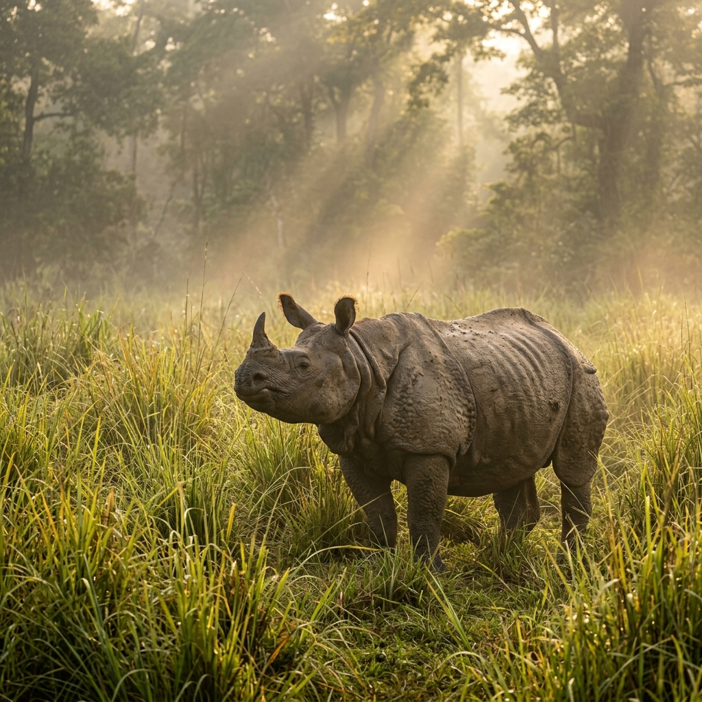
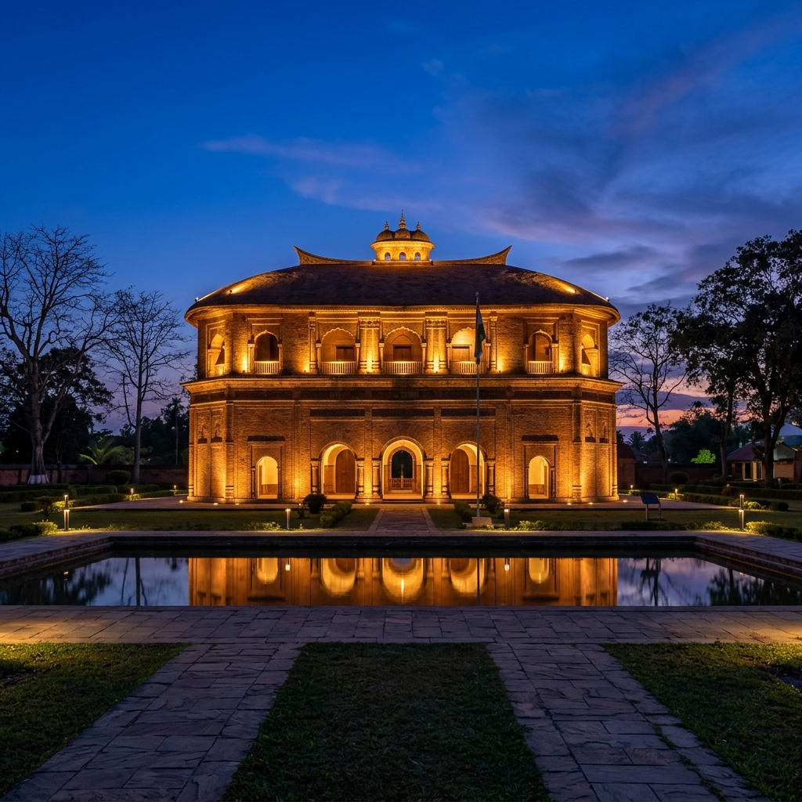
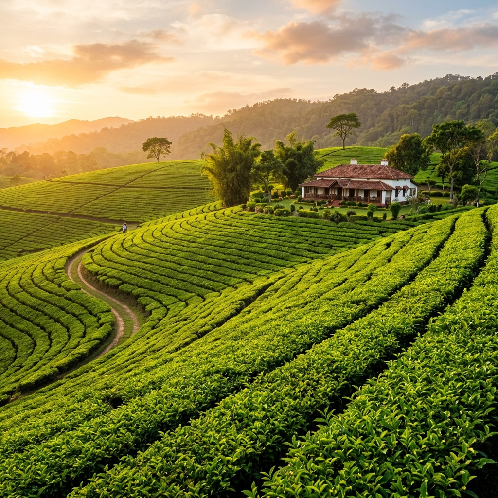
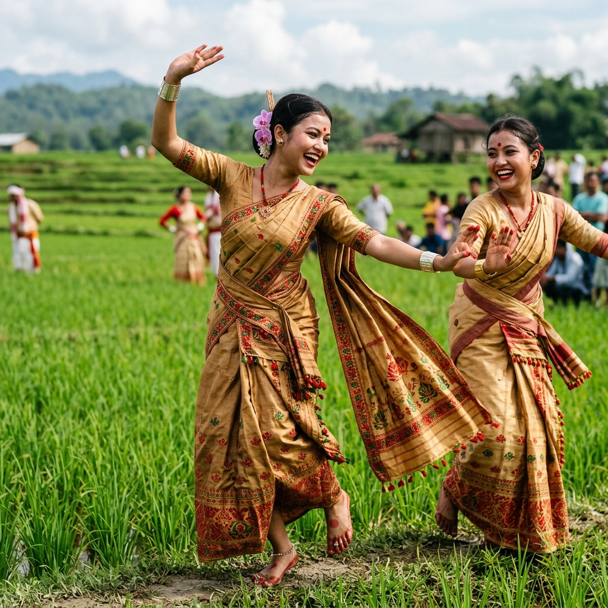

Experience the mesmerizing landscapes, rich heritage, and the soul-stirring culture of the Gateway to North-East India.
Begin the JourneyAssam is not just a destination; it's a feeling. A land where the mighty Brahmaputra flows, where the one-horned rhino roams free, and where every cup of tea tells a story of centuries.
Every corner of Assam offers a unique perspective. Explore the diverse facets of our beautiful state.



From the rhythmic beats of the Bihu Dhol to the ethereal grace of Sattriya dance, Assam's culture is a tapestry of diverse traditions. Our people, our festivals, and our hand-woven silk stories await you.

Beyond the famous landmarks lie the hidden jewels of Assam. Remote hill stations, mystical lakes, and villages where time stands still.
Experience the round-the-year vibrancy of Assam. From seasonal harvesting celebrations to dynamic campus and local cultural events.
Step onto the Weaver's Trail to explore centuries of heritage craftsmanship, or join an artisan-led workshop to learn traditional motifs yourself.
Select a preset circuit, configure your arrival point and interests, and customize your custom day-by-day itinerary.
A curated luxury experience taking you from the gateway of Guwahati to the wild heart of Kaziranga.
Begin your journey with the blessings of Goddess Kamakhya and a sunset cruise on the Brahmaputra.
Head to Kaziranga National Park for dawn jeep safaris and elephant rides. Stay in a luxury eco-lodge.
Live the colonial life in a tea bungalow. Learn the art of tea tasting and visit the historic Ahom capital, Sivasagar.
Shop for authentic Muga silk in Sualkuchi before heading back with a heart full of memories.
Don't just take our word for it. Hear from travelers who discovered the soul of Assam with us.
"The experience with Axom Darshan was surreal. Seeing the rhinos at Kaziranga at dawn was a bucket-list moment I'll never forget."
"Living in a 100-year-old tea bungalow felt like stepping back in time. The hospitality and the food were world-class."
"The Bihu dance performance was so energetic! I loved learning about the local traditions and the silk weaving process."
Ready to explore the unmapped trails of Assam? Drop us a message, and our travel curators will craft a personalized itinerary for you.
+91 98765 43210
explore@axomdarshan.in
Guwahati, Assam, India